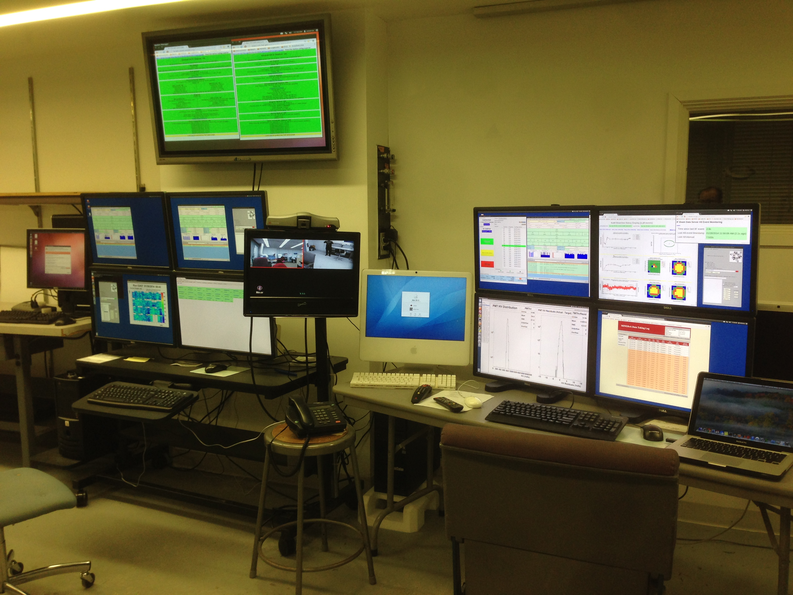
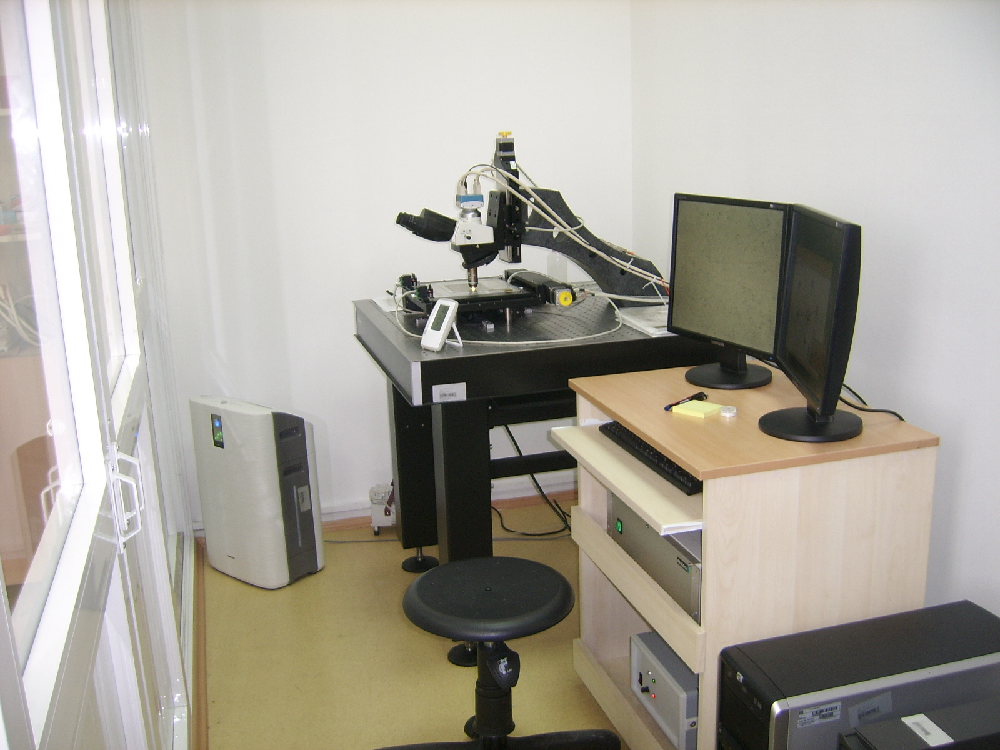
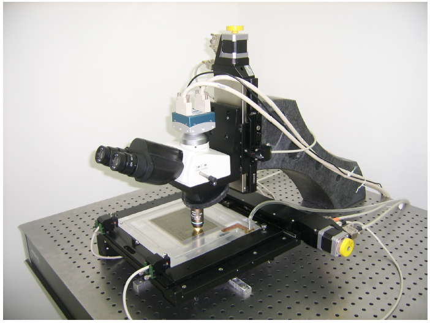
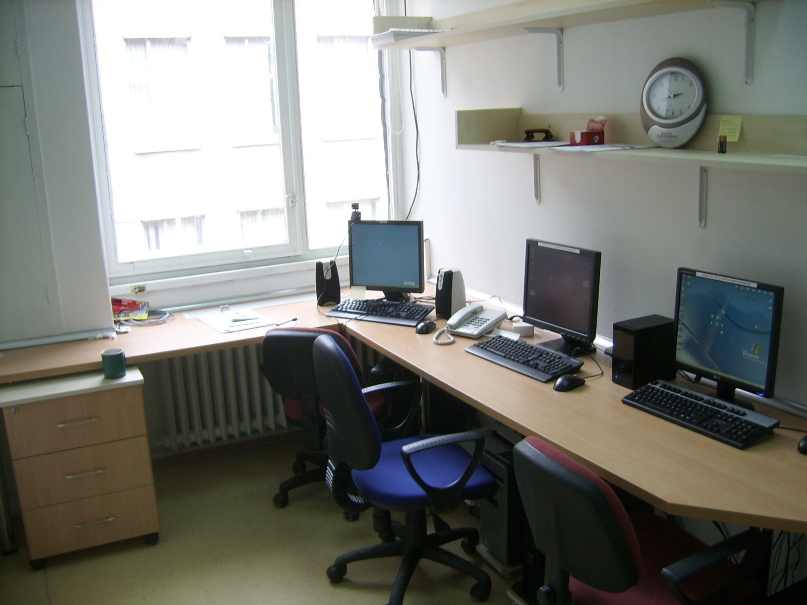

MINERvA and MINOS Experiments Remote Control Stations

About:
MINERvA and MINOS Detectors are monitored and controlled from remote control stations located at different institutions. Tufts University have two different remote stations for both experiments. Both systems have a software setup allowing them to control MINERvA and MINOS Detectors at the same time.
Importance:
Simultaneous Control for MINERvA and MINOS Experiments at Tufts University
Technologies:
Ubuntu 12.04 LTE 32-bit
Responsibilities:
Installing the remote control station hardware and software
Testing and maintaining the system
Writing Shell scripts to optimize Remote Control Software
MINERvA Detector is monitored and controlled from a control room located at Fermi National Accelerator Laboratory. In July 2013 we upgraded the existing system with a new one in order to have a more user friendly and secure system.
Importance:
On-Site Control Station for MINERvA Detector at Fermilab
Technologies:
Scientific Linux 6 x86_64
Scientific Linux 5 i386
Responsibilities:
Installing the control room specific hardware and software
Testing and maintaining the system
Providing documentation
Collaborators:
Jeremy A. Wolcott, University of Rochester
Geoff Savage, Fermilab Computing Division
Jason Harrington, Fermilab Computing Division
Emulsion Analysis Laboratory



About:
OPERA Experiment uses high-speed automatic scanning systems in order to detect particle trajectories inside nuclear emulsion films. System uses a microscope and multiple PC's to retrieve and analyze the data.
Importance:
First Emulsion Scanning Laboratory at Turkey
Technologies:
Image Processing for detecting particle trajectories